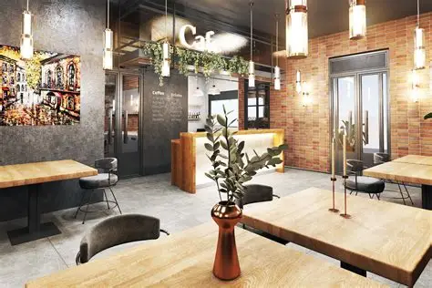
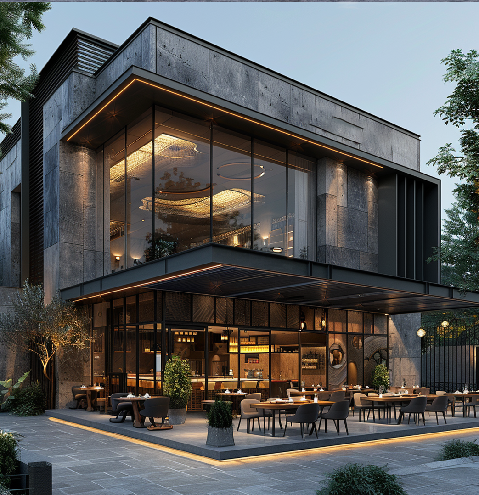

About Us

Honeybrick Kitchen is a cozy brunch café located in the heart of St. Louis. We believe in warm mornings, fresh plates, and good company. Our menu features locally sourced ingredients and handcrafted drinks made with care.

Visit our official website for more information: Honeybrick Kitchen Website